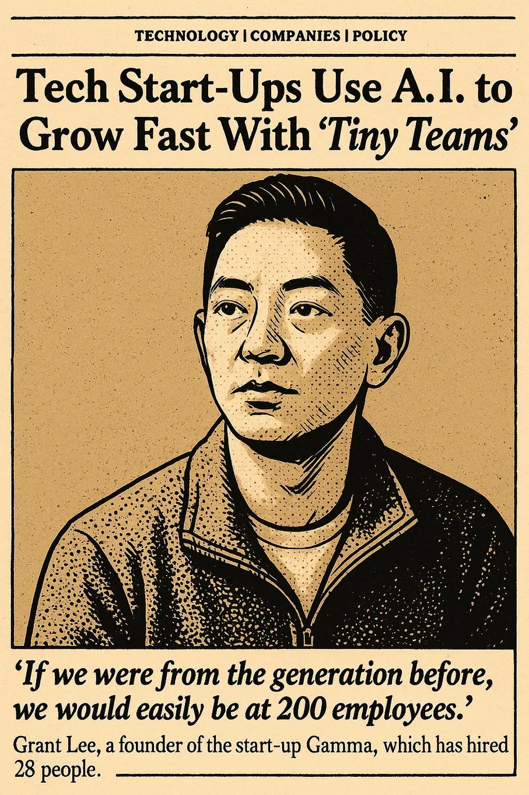

How Gamma reached 50 million users with 28 employees
Originally posted on LinkedIn, May 14, 2025.
Gamma reached 50 million users with just 28 employees, and it is profitable. The AI presentation startup was covered by The New York Times in May 2025, showing that a small team can now build a huge company.
Instead of raising tens of millions of dollars and racing to expand, Gamma chose a different approach:
- A tiny, versatile team
- Deep use of AI
- Profitability for 15 consecutive months
- No unnecessary management and no points of failure
Every Gamma employee is a generalist who can build, analyze data, and understand customers. AI is not just an assistant. It is a real force multiplier:
- Claude for data analysis
- Cursor for code
- NotebookLM for market research
The results are concrete. Gamma’s head of growth built an analytics system that requires no SQL. Its marketing lead created strategic personas from thousands of customer interactions. The design team builds fast prototypes and puts them in front of enthusiastic users.
Gamma is not just doing more with less. It is redefining what a small, talented team can accomplish with the right tools. Its strategy comes down to one question: How much impact can you create with the fewest people?
The future belongs to small teams of exceptional people. Grant Lee, Gamma’s founder, described the approach in his original post.
